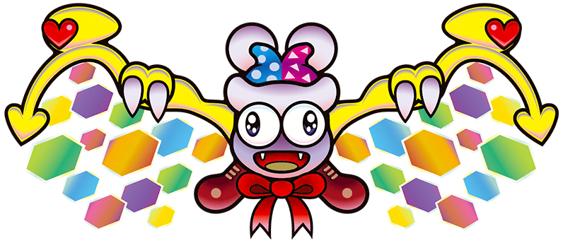
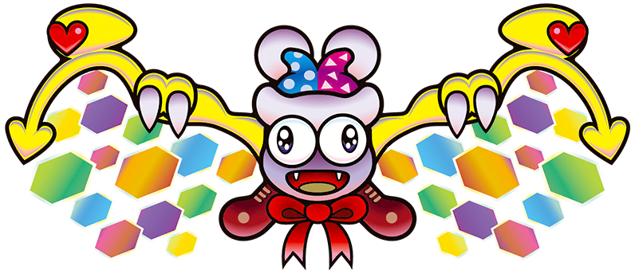

Marx represents the Kirby series’s first dip into deeper themes and more complex ideas. As a side note, their name in japanese translates more directly to “Mark” than Marx. The character, who is not dissimilar to a jester or clown, introduces themselves to Kirby as a friend and ally at the start. The game they premier in has them asking Kirby for help as physical embodiments of the sun and moon are fighting and causing all kinds of chaos.
Throughout their journey, Marx convinces Kirby to work towards reaching a being known as Nova, a wish giving mechanical space object that Marx says will stop the sun and moon fighting. However, after Kirby helps the two reach it, Marx betrays Kirby, wishing for power and for control of Planet Popstar, Kirby’s home world. In doing so, they become the true final boss, taking a chaotic monster form with two large shimmery wings.
Marx is the first time the Kirby series explored a twist villain but it was also the start to the overarching theme of power corrupting. In later games and stories, marx is depicted as only a mischief maker, only really wanting to bring a little chaos to the world, but with the promises that something like Nova could give send them down a Darker path, revealing more about themselves as they lose themself to that dark power.
Even still, Marx is also the first major example of the theme of redemption within the series. In many later games, marx appears not as an enemy, but as a friend, helping Kirby while still being that mischievous jester he really is. Marx is not the deepest exploration that HAL or Masahiro Sakurai takes in this series, but their existence allowed for the series to really dip its toes into larger and more complex stories and themes.